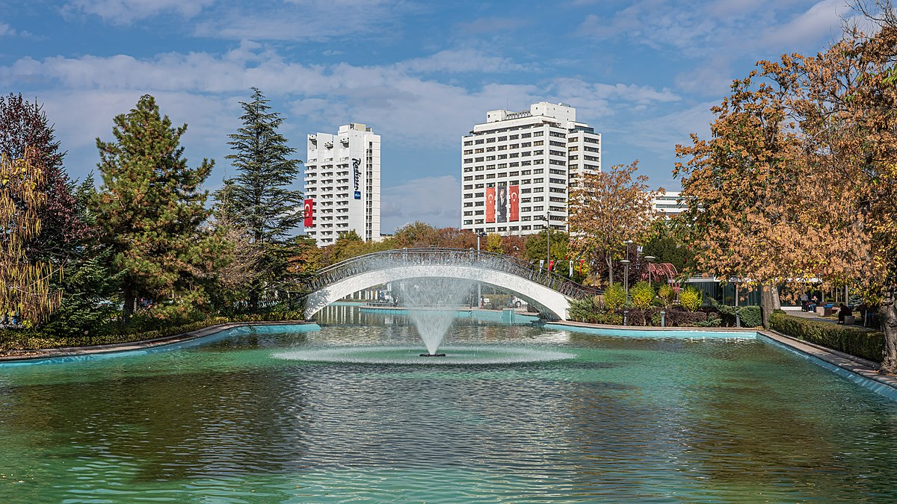

Gençlik Parkı'nda Sanatın İzinde
Gençlik Parkı, Ankara’nın merkezinde bulunan ve yıllardır başkent halkının nefes aldığı tarihi bir kamusal alandır.
1943 yılında açıldığından beri şehrin sosyal, kültürel ve sanatsal yaşantısında büyük bir rol oynamıştır. Parkta yer alan heykeller, yalnızca birer sanat eseri değil; aynı zamanda kentin belleğinde önemli bir yer edinmiş figürlerdir.
Bu web sitesi, parkın sahip olduğu sanatsal mirası görünür kılmak, kullanıcıları bilinçlendirmek ve parkla duygusal bir bağ kurmalarını sağlamak amacıyla hazırlanmıştır.
Ayrıca projeye özel olarak tasarlanmış promosyon ürünleriyle parkın kimliği somut objeler üzerinden de temsil edilmektedir.
Ziyaretçiler bu sayfada park hakkında bilgi edinebilir, heykellerin tarihçelerini okuyabilir ve “Heykel sana neyi hatırlattı?” formuyla kendi anılarını paylaşabilirler.
Gençlik Parkı'nda Sanatın İzinde
Bu web sitesi Gençlik Parkı’ndaki kültürel mirası, sanat eserlerini ve parkın nostaljik ruhunu yansıtmak için hazırlanmıştır.
Gençlik Parkı Hakkında
Gençlik Parkı, 1943 yılında mimar Hermann Jansen’in şehir planlaması doğrultusunda açılmıştır. Cumhuriyet döneminin modernleşme simgelerinden biri olan bu alan, hem kültürel hem de sosyal bir merkez olarak tasarlanmıştır.
Parkın kuruluş amacı, başkent halkına nefes alacak yeşil bir alan sunmak ve sosyal etkileşimleri artırmaktı. Bu nedenle gölet, çay bahçeleri, yürüyüş yolları, lunapark ve tiyatro gibi alanlar planlanmıştır.
Uzun yıllar boyunca Ankaralıların buluşma noktası olan Gençlik Parkı, her yaştan insanın anılarında yer edinmiştir. Parkta çocuklar için oyun alanları, gençler için eğlence alanları ve yaşlılar için huzurlu yürüyüş rotaları bulunmaktadır.
Bugün hâlâ önemini koruyan bu park, kamusal alanda sanatın, doğanın ve sosyal yaşamın birleştiği bir mekândır.
Heykeller
Aşık Veysel Heykeli
2003 yılında Metin Yurdanur tarafından yapılan bronz döküm heykel, halk ozanı Aşık Veysel’i temsil eder. Sanatçının doğa ve insan sevgisi bu heykelle kamusal alana taşınmıştır.
Ziyaretçiler heykelin önünde durup, sanatçının eserlerini ve sözlerini anımsar.
Heykel, parkın kültürel yönünü güçlendiren önemli bir sanat eseridir.
Görsel ve tematik olarak halk kültürünü yaşatmayı hedefler.

Zürafa Heykeli
1970’li yıllarda yapılan bu heykel, parkın çocuklara yönelik yüzünü temsil eder. Zürafa heykeli, nostalji yaratan simgelerden biridir.
Çocukluk anılarında yer eden bu eser, parkın eğlenceli yüzünü yansıtır.
Parkın sembollerinden biri haline gelmiş ve ziyaretçilerin ilgisini çeker.
Basit formuyla etkili bir anlatım sunar.

Leyla Gencer Heykeli
2012’de Ahmet Uzun tarafından yapılan bu bronz heykel, opera sanatçısı Leyla Gencer’i sahnedeki zarafetiyle temsil eder.
Sanatın halkla buluşmasını sağlayan örnek bir çalışmadır.
Ziyaretçilerin kültürel bağ kurduğu bir sanat alanı oluşturur.
Parkta sanata verilen önemi gözler önüne serer.

Nursultan Nazarbayev Heykeli
2010 yılında Kazak-Türk dostluğu adına dikilmiş bu heykel, liderin kararlı duruşunu yansıtır. Heykel Beken Baimukhanov tarafından yapılmıştır.
Parkın uluslararası dostluklara da ev sahipliği yaptığını gösterir.
Kültürel ve politik temsili bir arada sunar.
Sanatın diplomasiyle birleştiği anlamlı bir örnektir.
Promosyon Ürünleri
Gençlik Parkı’nı temsil eden bez çanta, kupa, defter ve bardak altlığı gibi ürünler tasarlanmıştır.
Defter
Bardak Altlığı
Kupa
Bez Çanta